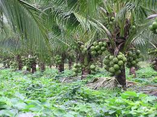
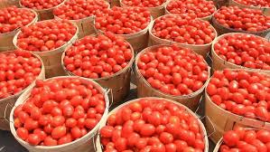
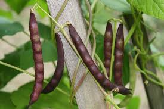
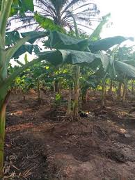

MAKING LIFE EASIER
WITH SCIENCE AND TECHNOLOGY
WITH SCIENCE AND TECHNOLOGY
Established in 2008, Piux inc. fouses on the use of mordern technology
to create economic ventures
that will help to increase the standard of living
of rural dwellers in Africa, Asia, and South America.
Our Mission
AGRICULTURE
we believe that Agriculture is a profritable venture considering the fact that everyday, humans rely on Agricultural products for survival. We work very hard with our team of experts to produce more advanced ways through which rural Agriculture can be more efficient using agrotech.
Agricultural Initiatives

Palm tree Plantation

Coconut Plantation

Tomato Farming

Beans Farming
Cassava Farming

Plantain Plantation
LIVESTOCK FARMING
Our organisation is focused on harnessing potentials and puttin them to efficient use. Therefore, we believe that livestock farming, being one of the oldest economic activities of man, guarantees food suppply,hides, skin, bones, milk and other animal products without going to the forest to hunt. Our organisations aims to empower rural dwellers on the following livestock farming ventures.